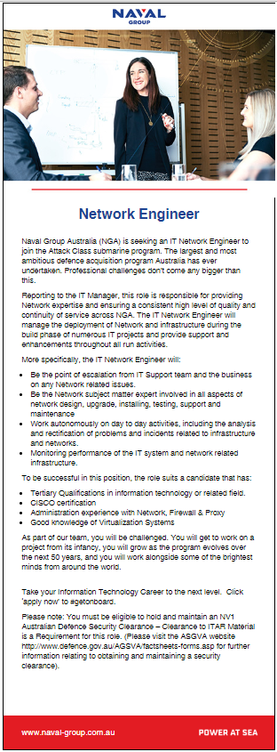

Name: Jason Davis Student Number: s3866226 E-mail: s3866226@student.rmit.edu.au I am Jason Davis. I live in Adelaide, South Australia. I am an IT professional, and have been working in IT for the last 13 years on a full time basis. During that time, I’ve worked for private and Government entities, in various roles. Before this, I worked primarily in telecommunications, with both Telstra and Commander Australia, in network faults. I completed my Diploma of Information Technology (Internetworking) at Adelaide TAFE in 2005. I hold multiple industry certifications, KCA, MCP, ITIL, CCNA Voice, CCNA Security, CCNP Route Switch, CCNP Enterprise, Cisco Specialist – Enterprise Advanced Infrastructure Implementation, Cisco Specialist Enterprise Core. On top of this, I have also run my own business for the last 8 years, where I provide security consultation, design, and also host servers in a datacentre environment here in Adelaide. I am certified as an Information Systems Security Professional, by the US Government under US DoD 8570 and CNSS 4011. These are issued by the NSA, the Committee on National Security Systems (CNSS) and the US Department of Defence. I am also a carer for my Mum, and I am currently also studying for my CCIE Enterprise certification. In what little spare time I have left, I enjoy taking a drive in the countryside, or going for a walk along the sea somewhere. That is how I zone out and recharge. I enjoy watching movies, and I can’t resist a good wood oven pizza with friends. Anchovies are my friends. I enjoy AFL – Sadly, I am an Adelaide Crows supporter. Things are not looking good at the moment. It is a bit of a struggle to watch footy with no crowds. Just doesn’t seem quite right. For me, the fake crowd noise makes it worse. I have a cat. His name is Morty. I am pretty sure he thinks I’m a failure, as while I’ve been working from home, he often stares at me and assumes the loser has been fired. I’ve shown him my payslip, but I don’t think he believes it. This is me: This is Morty:
I work as a Network Engineer, and networks and security are where my interests lie. It is hard to explain it, but I am just fascinated by the way data moves, how it finds its way from one host to another, past firewalls, through routers, switches, all without getting lost. When you imagine the path a simple web request for Google may take, from your PC, through your router, generating a random port number, NATing of traffic, route lookups by your ISP, passing ACLs, passing reverse proxy server, to eventually hit the Google server – then it has to find it’s way back. It may even take an entirely different path, but it will still find its way back – thanks to BGP.
My interest in IT was sparked in the end of 1999. Prior to this, I had been working part time, and studying towards a Degree in Mechanical Engineering. My father died in 1998 when I was 22 years old, and I lost my way after that. I gave up studying Mechanical Engineering, I wasn’t motivated for work, and I really had no direction, no future aspirations and was just floundering in every aspect of life. Centrelink actually helped me there. They pushed me through the Work for The Dole program to do a short course in computing. I wasn’t really interested in it, but had to go 1 day a week. Thanks to Francine Murphy, my teacher there, who encouraged me. As, if not for her, I would not be a student at RMIT today. I would not have my Diploma in IT, or any of my industry certifications. The computing course was pretty basic, just a bunch of exercises to get the best out of Word, Excel, PowerPoint, Publisher. Through her encouragement, I ended up doing extra work, as she said I was quite talented as far as IT went. So, she gave me a book on HTML3.2. I created a fake website (it was pretty basic) for an imaginary wildlife park in Tasmania. Called Ringarooma Wildlife Park. I also ended up in the course 5 days a week – which nobody had ever done before, and I was helping others there who needed help in class. Through this, the course providers COMSKILL helped me get work at the local council. Francine encouraged me to then study part-time at night at Adelaide TAFE, to get my Certificate 3 in IT. But I ended up going all the way to my Diploma. My average grade at TAFE were all distinctions. Except for PERL which I barely passed! I have no idea where Francine is today. I wish I could say thank-you. I wouldn’t be where I am now without her.
I have worked in IT for the last 13 years. I’m currently employed as a network engineer, where I manage almost 900 Cisco routers, and a lot of switches too. I have a lot of industry certifications, and also have a Diploma of Information Technology from Adelaide TAFE.
I have actually been thinking about learning some programming for a long time now. I was always a bit scared to take the plunge. Perhaps due to previous experiences. In my Diploma I had to do a semester of PERL programming, and it was a complete mystery to me. I understood nothing that I was doing really, and the lecturer was no help. It was just a matter of follow the examples in the book, try to work it out, submit your work. The lecturer insisted that we always had the lights off and worked in the dark in the classroom, which was interesting. I had a look at the courses at OUA. I didn’t want to leave full time work to study, and the idea of studying from home appealed to me, and OUA said the RMIT course was really good. I had heard of RMIT, and it seemed to have a good reputation. So, here I am!
I am hoping to learn some programming. I have a few ideas that I would like to create into something meaningful. Something that works. These aren’t so much ideas to sell to become the next tech billionaire, but rather ideas of tools which would really help me in my job role as a network engineer. If I could sell it through my business, great, but I just want to be able to use it myself. If I can also gain a better understanding of how software goes together, to enable me to do my job better, and be a better engineer, this would also be a great outcome.
I already work in a role that is almost my ideal job. The only part that is currently missing from my ideal job is doing more design, implementation, and security work than I do now. I would like to work in a specific industry segment, as a Network/Security Engineer. I have applied for a few roles like this,and I have recently applied for this job here in Adelaide. I would like to work in the defence industry. I would like to work in defence because I want to be exposed more to industry leading solutions, and to also feel that my work is contributing to something useful, the defence of Australia. I have found that a lot of work I have done in IT, makes no meaningful contribution. Or, that is how it feels to me anyway. That is something I would like to change. Click here to see the job I applied for. I have all the skills required for this role, the only thing I do not have is the defence clearance. This is often a sticking point with getting a role like this, as all employers seem to insist you have one already, but it is only a defence contractor who can apply for a clearance, which is a little frustrating. This particular role is working for the French company who has won the contract to design and build the future attack submarines for the Royal Australian Navy. It is to provide design and deployment of network hardware and infrastructure for offices, new shipyards, and also be a technical escalation point for faults. This will also involve ongoing troubleshooting, monitoring, maintenance and Adds/Moves/Changes for the network infrastructure that supports the design and build project. Due to the sensitivity of the information, this will also allow me to have more hands-on experience with advanced security technologies and configurations at layers 2 and 3, with such things as 802.1x and ISE deployments. The thought of gaining employment in this type of role and industry is very exciting to me. 
The results of my online personality profile tests are as follows: Myers-Briggs type results done through 16 personalities: Defender ISFJ-T Online learning test results done through Education Planner:Auditory Learner. The third test I decided to do was an online Big 5 personality test, done at Open Psychometrics. The results are available here. The results of these tests are meaningless to me. I am unable to find any certain science that these tests are 100% accurate. They are subject to an “interpretation” on what someone answers to each question. However, they lack any intelligence in relating to someone’s personal experiences in their assessments. An individual’s work experience, what country they were raised in, could all influence the results of these tests. I would be concerned by any employer who would use this sort of thing to make decisions on people. I certainly would not work there. I find them inaccurate, and they don’t really represent my effectiveness in doing my job. I would suggest they are about as reliable as astrology or tarot.
My idea is for a software tool for use in large networks. There are already many monitoring tools around, which can give you analytics for network traffic. I use PRTG currently, and get alerts regarding heavy useage, and tunnel interfaces going down, high CPU and similar alarms. However, one thing that I do on a daily basis is troubleshoot specific issues, such as complaints on excessive load times or excessive download times. Currently to investigate this is a manual process. I need to connect to a router, run some commands on interfaces to get the statistics and check for CRC errors, queue drops, both input and output queues. If I have a copy of this data from a previous period of time, I can then do a manual comparison to see if output drops are incrementing. All this for me is currently manual. I would like to automate the recording and comparison of this data.
My motivation for this is to primarily improve troubleshooting. Make troubleshooting more accurate, faster, and even to allow me to be more proactive – to resolve problems before they become an outage. The largest impact on the users that I support are complete outages. Being able to detect an increasing rate of output or input drops over a week, would give me early warning of a potential problem. This way, instead of waiting for a user to complain, and log an incident for investigation, I would be able to be proactive, and start investigating the errors, and then be able to hopefully prevent the outage.
I imagine this product to be a simple GUI. Perhaps using Java, or Python. It would need a database of hostnames/IP addresses for the devices I manage. I would like to be able to input this from a spreadsheet. Have the application read out the table data of IP address and hostname, username and password and import into the application so that I can then search by IP or hostname. The application should also record information over time, and be able to compare differences. The application should also be able to run on a schedule. I would ideally want to run a schedule every night, where the application launched an ssh session to each device, executed a show run with terminal length 0, and saves the output to a text file with the date. Then, automatically compares the previous day with the current day, and flags an alert if there have been any changes in the configuration. There are 2 reasons why this is required. Firstly, to detect unauthorized changes. Secondly, this will be able to detect changes such as an interface being down, that was up yesterday. Something that would need investigation. I would also want several buttons to be able to launch individual commands which will execute against the router, and record the results, and compare if there are any historical records. Ideally, these would run as a discovery, when adding a new device. Commands such as show ip interface brief, show interface status, show interface status err-disabled, show interfaces. When running ad-hoc and on demand, you would choose what your query would be. An example would be a switch port not responding and the indicator light would be orange. You could click the show interface status err-disabled button, enter the hostname, and you would get a report showing any interfaces that are err-disabled, and the cause of the err-disabled status, such as port security violation, arp violation, dhcp snooping violation. In addition, in the event a user is complaining about very slow downloads, or slow web pages loading. In my environment, this is an indicator of a saturated link, QoS queuing strategy being overrun, and I would expect in this instance to see an output error drop count incrementing. Being able to run the command from the click of a button, and perhaps have a box that will run it every 5 minutes for 30 minutes, then provide a calculation of the increase, would be ideal. This is also useful data for proof of issue resolution. Being able to see a drop in the number of packet drops over time, could be used to chart the resolution and prove the resolution for incident notes.
Tools and technology required would be a server, to host database, application, and files associated with the program. Along with network connectivity and Windows server licensing. ACLs on end devices may need to be changed, to permit ssh traffic from the server, if the server will be outside the management IP range. It is planned that this application will use Python to run ssh sessions and input commands in a Cisco IOS-XE and IOS format.
Learning programming is the main skill required to bring this project to a working test. A sound knowledge of being able to create a user interface that works, that has the desired features, and has the python scripts behind it ready to be executed. I already have the network engineering and server skills to do this. What I do not possess is an understanding of programming languages, how these integrate, how they can be used to help me create this. After 3 weeks at RMIT, I have already learned about loops, which could likely help me achieve a good portion of what I would like to do. I have a long way to go to be able to build the skills for this, but this is why I am at RMIT.
If the project is successful, I believe it would make me a better engineer, by enabling me to have more data to assess, and faster access to common troubleshooting. In addition to this, it will also provide greater security for the network hardware. As, unscheduled and unapproved changes can be detected, and assessed. Has a device been compromised, and a static route added to bypass a firewall? I am not sure if this would be a saleable idea or product. The entire idea is to have a tool which enables me to be better at my job, be more proactive in resolving issues, and provide a better user experience by maintaining network availability, security and performance.
SEEK. 2020. [online] Available at: Website [Accessed 20 June 2020].
16personalities.com. 2020. Free Personality Test, Type Descriptions, Relationship And Career Advice | 16Personalities. [online] Available at: Website [Accessed 20 June 2020].
Educationplanner.org. 2020. What's Your Learning Style?. [online] Available at: Website [Accessed 20 June 2020].
Openpsychometrics.org. 2020. Big Five Personality Test. [online] Available at: Website [Accessed 20 June 2020].